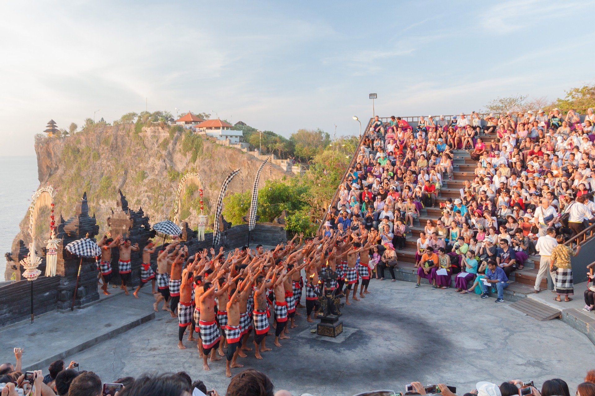

Tari kecak di Tanah Lot, Bali, Minggu (9/7/2020).
Mengutip laman Wonderful Indonesia, beberapa waktu lalu Bali juga berhasil memenangkan tiga Penghargaan sekaligus yaitu Top 10 Overseas Destinations 2018, Top 10 Luxury Travel Destinations 2018, dan Top 10 Honeymoon Destinations 2018 pada Global Destination Marketing Summit and World Culture and Tourism Forum di China